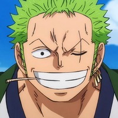

Life of A Hunter
Roronoa Zoro, also known as "Pirate Hunter" Zoro, is the combatant of the Straw Hat Pirates, one of the Senior Officers of the Straw Hat Grand Fleet, and is publicly recognized as the right-hand man and number two of his crew's captain Monkey D. Luffy.Formerly a bounty hunter, he is the second member of Luffy's crew and the first to join it. Born in the East Blue, Zoro is the son of Tera and Roronoa Arashi. As The master of Three Sword Style, a swordsmanship style which he created during his childhood training in Shimotsuki Village, Zoro is one of the three most powerful combatants of the Straw Hats, alongside Luffy and Sanji, who is referred to as the "Monster Trio". His dream is to become the greatest swordsman in the world, to honor a promise he made to his deceased childhood friend and distant cousin Kuina. In addition to his infamy as one of the Straw Hats and as a former bounty hunter, his sizeable bounty upon arriving at the Sabaody Archipelago caused Zoro, along with Luffy to be included among the eleven "Super Rookies", pirates who simultaneously reached the Red Line with bounties of over 100,000,000 Berry shortly before the Summit War.He, the other ten Super Rookies, and Marshall D. Teach would go on to be referred to as the "Worst Generation." Zoro gained his first bounty of Berry 60,000,000 after the Arabasta Arc. It later increased to Berry 120,000,000 after the Enies Lobby incident, then again to Berry 320,000,000 after the Dressrosa Arc. Following the Raid on Onigashima, his bounty was increased to Berry 1,111,000,000.